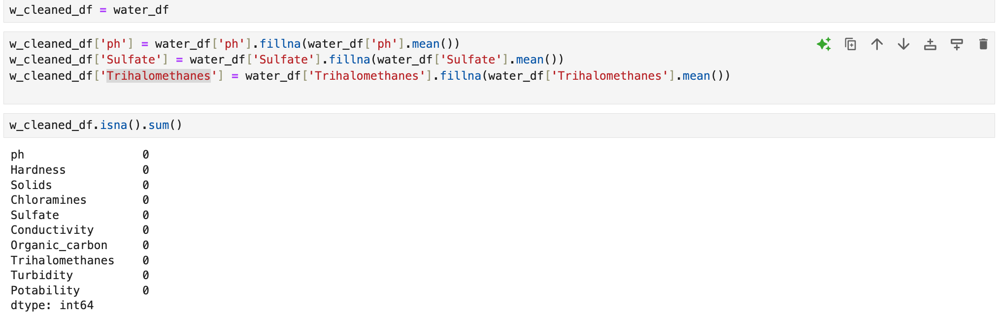
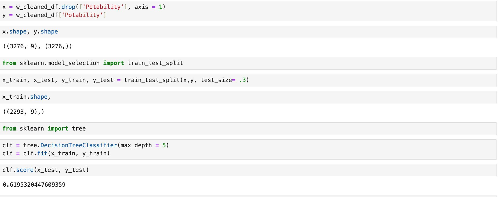

Project 2 : Water Testing
Introduce the Problem:
With this dataset I am creating a model that would be able to test for possible drinking water. The world lives on water life is created from it and its something in 3rd world countries we easily forget is not always accesiable by other countries. With this dataset I can create a model that through varies test can tell if water is drinkable or not.
Introduce the data
The dataset that I used to solve this problem is the Water Quality classification database to test for different features that tests waters quality conducted by ADITYA KADIWA non profit organization. I found the dataset on the Kaggle webstite: Water Quality.
Pre processing
There was a few null values for ph, sulfate, and Trihalomethanes so I filled them in:
Results
Here I split up the data into a training and testing dataset and ran it trhgouh train_test_split and then trained the model using a decision tree classifier.
Storytelling and Impact
Code:
Here is all the code from my project: code
References
- Class Material
- Stack Overflow
- ChatGPT: Used for some grammer correct and debugging of code and to understand how to group graphs and columns together for more consise graphs.